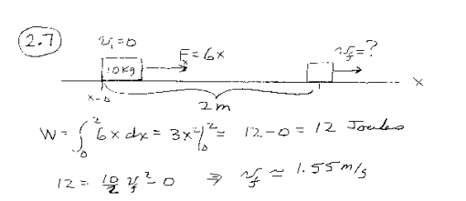

Fisica 1 - Esercizi sul lavoro
Antonio Pierro @antonio_pierro_
Per consigli, suggerimenti, eventuali errori o altro potete scrivere una email a antonio.pierro[at]gmail.com
Esercizio 1 - soluzione

Esercizio 2
- Un sacco di sabbia di massa 100kg viene sollevato da una gru.
Il sacco ha un foro da cui perde sabbia in modo uniforme. Nell'istante in cui la gru lo ha sollevato il sacco di 25 metri, un quarto del suo contenuto è stato perso.
- Qual è il lavoro compiuto dalla gru fino a tale istante?
Esercizio 2 - soluzione
- Ricordiamo che, per definizione, se con F(x) indichiamo la componente della forza in funzione della posizione lungo il cammino rettilineo AB , il lavoro compiuto è
\[
L_{AB} = \int_A^B F(x) dx
\]
- Se pensiamo al percorso del sacco da terra fino a 25 metri di altezza come al tratto AB su cui integrare la forza, e la forza come pari, in modulo, al peso (variabile) del sacco, supponendo una diminuzione uniforme dal valore iniziale di 100g al valore finale di 75g, si ha F(x)=100g–g⋅x, per cui:
\[
L_{AB} = \int_0^{25} (100g -gx) dx = 21437.5 Joule
\]
Esercizio 3
- Un punto materiale si muove lungo l'asse x ed è soggetto ad una forza elastica di richiamo F, costantemente diretta verso l’origine O delle ascisse e di intensità proporzionale alla distanza da O del punto stesso, con costante di proporzionalità (cost. elastica) k.
-
Calcolare il lavoro fatto dalla forza F, quando il punto materiale si sposta dalla posizione
di ascissa \(x_1\) a quella di ascissa \(x_2\).
Esercizio 3 - soluzione
\[
F = -kx
\]
\[
L_{x_1,x_2} = -k\int_{x_1}^{x_2} x dx = -k [\frac{1}{2}{x^2}]_{x_1}^{x_2} = -\frac{1}{2}k(x_2^2-x_1^2)
\]
Esercizio 4
- A force F = 2x + 5 acts on a particle. Find the work done by the force during the displacement of the particle from x =0m to x = 2m. Given that the force is in Newtons.
-
Sulution: 14 Joule
Esercizio 5
- Calculate the work done by the variable force \(F(x)=\sin(\pi x)\) from \(x=-1\) to \(x=1\).
- Sooution: 0 Joule
Esercizio 6
- We are lifting a leaky bag sand that initially weighs 144 Kg. The bag is half empty at 18m.
- Calculate the work required to lift the bag of sand initially on the ground to 18 m above the ground.
- Assume the leak is a constant rate.
- Solution: 19440 Joule
Esercizio 7
- What is the total work done to lift a 20m chain that weight 60kg, so the top end is 40 m above the ground?
Esercizio 8 - work required to empty the tank
Work pumping cylinder with spout
Calculating the Work Required to Drain a Tank